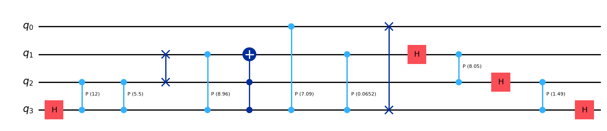

import torch
from genQC.pipeline.multimodal_diffusion_pipeline import MultimodalDiffusionPipeline_ParametrizedCompilation
from genQC.inference.sampling import generate_compilation_tensors, decode_tensors_to_backend
from genQC.utils.misc_utils import infer_torch_device, set_seed
from genQC.platform.tokenizer.circuits_tokenizer import CircuitTokenizer
from genQC.benchmark.bench_compilation import SpecialUnitaries
from genQC.platform.simulation import Simulator, CircuitBackendType
device = infer_torch_device()
set_seed(0)
pipeline = MultimodalDiffusionPipeline_ParametrizedCompilation.from_pretrained(
repo_id="Floki00/cirdit_multimodal_compile_3to5qubit",
device=device)
pipeline.scheduler.set_timesteps(40)
pipeline.scheduler_w.set_timesteps(40)
pipeline.g_h, pipeline.g_w = 0.3, 0.1
pipeline.lambda_h, pipeline.lambda_w = 1.0, 0.35
U = SpecialUnitaries.QFT(num_qubits=4).to(torch.complex64)
out_tensor, params = generate_compilation_tensors(pipeline,
prompt="Compile 4 qubits using: ['h', 'cx', 'ccx', 'swap', 'rx', 'ry', 'rz', 'cp']",
U=U,
samples=8,
system_size=5,
num_of_qubits=4,
max_gates=32)genQC · Generative Quantum Circuits
Generating quantum circuits with diffusion models

Code repository for generating quantum circuits with diffusion models.

📰 News
- 🔥 [2025-06-02] Paper release: Synthesis of discrete-continuous quantum circuits with multimodal diffusion models.
- 🔥 [2025-06-01] Discrete-continuous circuits with multimodal diffusion - model released on Hugging Face: huggingface.co/collections/Floki00.
The codebase
The code contained within this repo allows the sampling of pre-trained diffusion models and includes our pipeline to fine-tune and train models from scratch. Pre-trained weights can be found on [Hugging Face] and can be downloaded automatically via our code (see minimal example). For the text CLIP model weights we use the OpenCLIP library, which will download (and cache) the CLIP model on first usage of our pipeline. In case you prefer reading a documentation, rather than notebooks or code, see the project page under [Documentation].
This repo inlcudes:
genQC/a full release of our used diffusion pipeline.src/examples/examples and tutorials to show how to use the library.src/the source notebooks fornbdev.
Examples
Minimal example
A minimal example to compile the 4-qubit Quantum Fourier transform (QFT) unitary, using parameterized circuits.
vocabulary = {g:i+1 for i, g in enumerate(pipeline.gate_pool)}
tokenizer = CircuitTokenizer(vocabulary)
simulator = Simulator(CircuitBackendType.QISKIT)
qc_list, _ = decode_tensors_to_backend(simulator, tokenizer, out_tensor, params)
qc_list[0].draw("mpl")
Further examples
More detailed examples and tutorial notebooks are provided on the project page [tutorials] or in the directory src/examples/.
Installation
The installation of genQC is done via pip within a few minutes, depending on your downloading speed.
Method 1: pip install
To install genQC just run:
pip install genQCNote, this will install missing requirements automatically. You may want to install some of them manually beforehand, e.g. torch for specific cuda support, see https://pytorch.org/get-started/locally/.
Requirements: genQC depends on python (min. version 3.12) and the libraries: torch, numpy, matplotlib, scipy, omegaconf, qiskit, tqdm, joblib, open_clip_torch, ipywidgets, pylatexenc, safetensors, tensordict and huggingface_hub. All can be installed with pip install. In src/RELEASES.md [doc] and the GitHub release descriptions, specific tested-on versions are listed.
Method 2: clone the repository
To use the latest GitHub code, you can clone the repository by running:
git clone https://github.com/FlorianFuerrutter/genQC.git
cd genQCThe library genQC is built using jupyter notebooks and nbdev. To install the library use in the clone directory:
pip install -e .Test installation
You can run the provided src/examples/Quantum circuit synthesis with diffusion models/0_hello_circuit [doc] [notebook] example to test your installation. On a computer with a moderate GPU this inference example notebook should run under half a minute.
License
The code and weights in this repository are licensed under the Apache License 2.0.
BibTeX
We kindly ask you to cite our paper if any of the previous material was useful for your work.
Quantum circuit synthesis with diffusion models
@article{furrutter2024quantum,
title={Quantum circuit synthesis with diffusion models},
author={F{\"u}rrutter, Florian and Mu{\~n}oz-Gil, Gorka and Briegel, Hans J},
journal={Nature Machine Intelligence},
doi = {https://doi.org/10.1038/s42256-024-00831-9},
vol = {6},
pages = {515-–524},
pages={1--10},
year={2024},
publisher={Nature Publishing Group UK London}
}